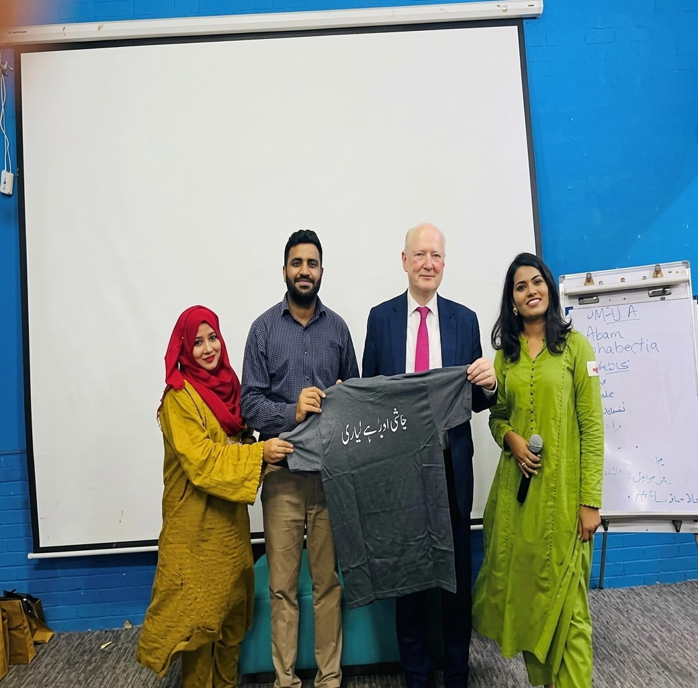

A learning community takes root.
What began as a voluntary effort in Lyari grew from a small literacy room into a community center.
Since 2014, our community-led work in Lyari has opened new paths through education, skills and opportunity.
Explore our story
One community. A growing commitment to learning.
What began as a voluntary effort in Lyari grew from a small literacy room into a community center.


The first IT batch began with two laptops. Lyari Entrepreneur Academy followed, building skills for work and enterprise.


HOL adopted a government school and added preschool, vocational IT training and karate for young people.


Formal registration strengthened the foundation. By 2026, our IT education project had trained 10,000 students.

